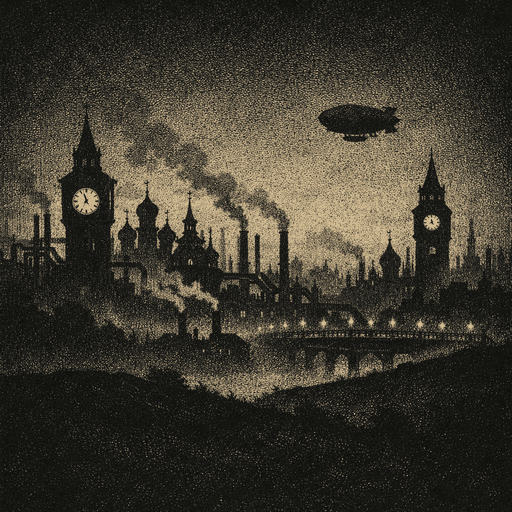
Центр
Города на паре, семь кланов, порядок. Здесь куют закон из стали и крови, а прошлое записывают в родовые книги.
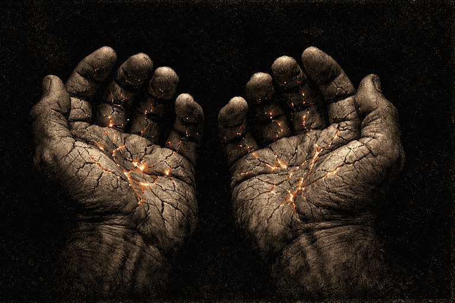
Постапокалиптическая боярка. Серия из семи книг.
Тело помнит. Голова — нет.
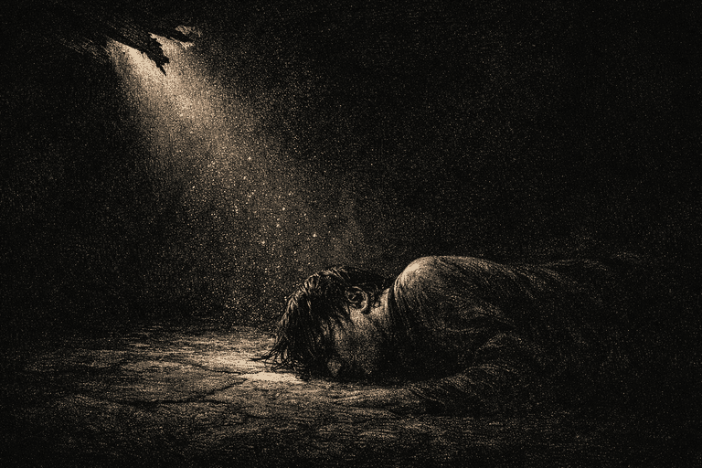
«Во рту привкус крови.
Язык прилип к нёбу.»
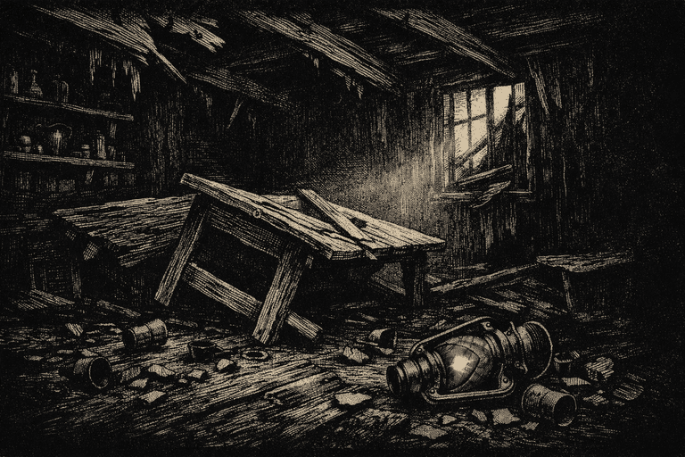
«Ни имени.
Ни вчера.
Только стены чужой корчмы.»
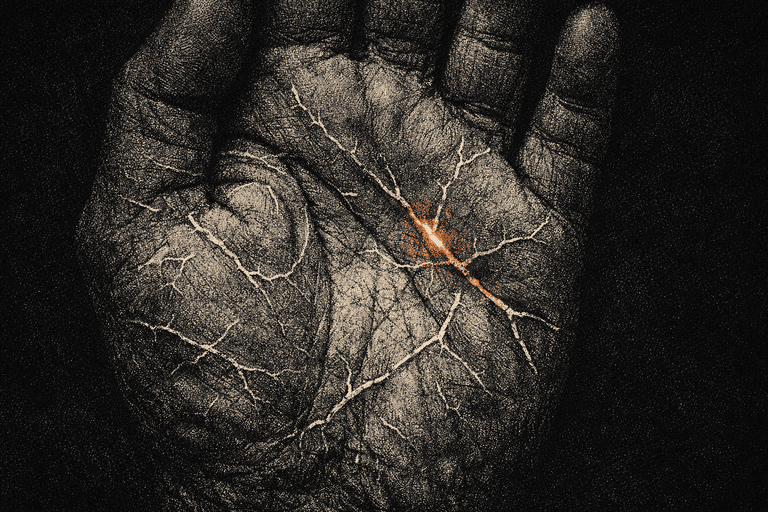
«Руки знали,
что делать.»
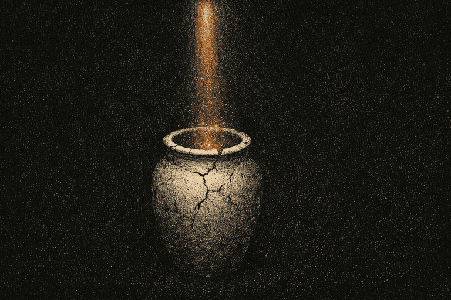
«Пустой сосуд — не бесполезен. Он ждёт.»
Человек приходит в себя среди чужой крови на полу мёртвой корчмы. Имени он не помнит. Вчерашнего дня — тоже. Но руки знают: как держать нож, как перевязать рану, как разжечь огонь без колебания.
Мир снаружи — выжжен и живой. Земля помнит войну, которая перемолола тех, кого он, возможно, любил. Города стоят на паре и крови, вместо лесов — серебряные Пепельники, а за Периферией начинаются Пустоши, где реальность даёт трещину.
Он идёт искать себя, потому что тело ведёт. И чем ближе подходит, тем яснее: прошлое стёрли не просто так.

Города на паре, семь кланов, порядок. Здесь куют закон из стали и крови, а прошлое записывают в родовые книги.
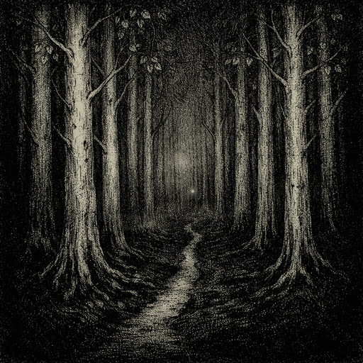
Серебристые Пепельники, мутанты, охотники за кристаллами. Граница между живой жилой и мёртвой.
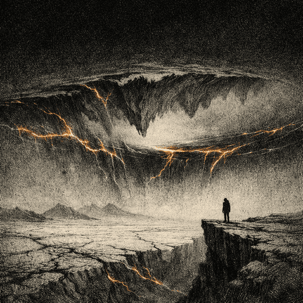
Где реальность не держит форму. Самая дорогая добыча. Самый короткий путь в землю.
Магия — это память земли о мёртвых. Живой голос её будит.
«Во рту привкус крови. Язык лежал тяжело, прилип к нёбу.»
Глава 1
«Мышцы приняли её без удивления — делали это много раз.»
Глава 1
«Белая паутина на ладонях. Ни шрамы, ни ожоги — что-то, для чего у мальчишки не хватало слов.»
Глава 1
«Слово вырвалось из горла — и лес послушался.»
Глава 3
«Земля узнала его раньше, чем он узнал себя.»
Глава 7
Десять глав написаны. Главы выходят три раза в неделю.
Читать целиком на Author.Today → Читать первые главы здесь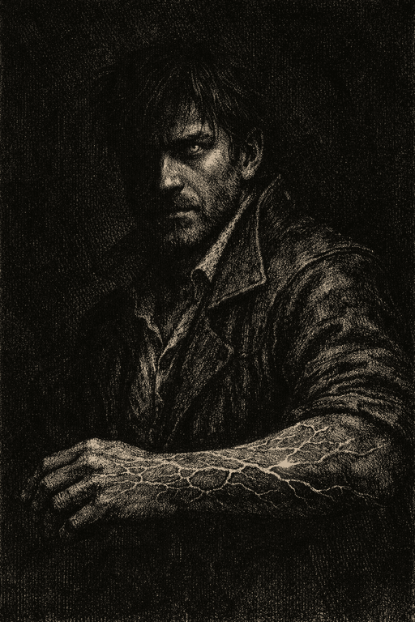
Имя стёрто. Руки помнят всё.
«Мышцы приняли её без удивления. Делали это много раз.»
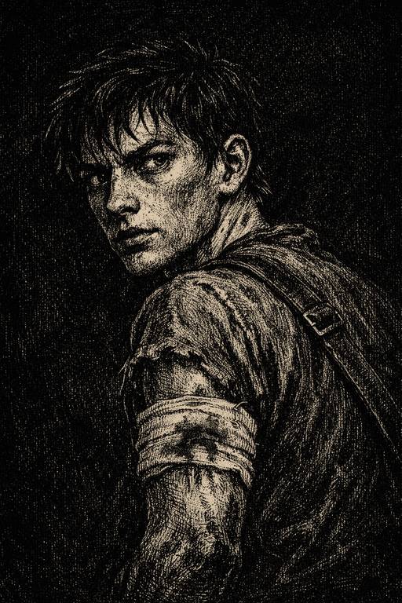
Первый живой, кого он встретил.
«План дерьмовый. Но другого нет.»
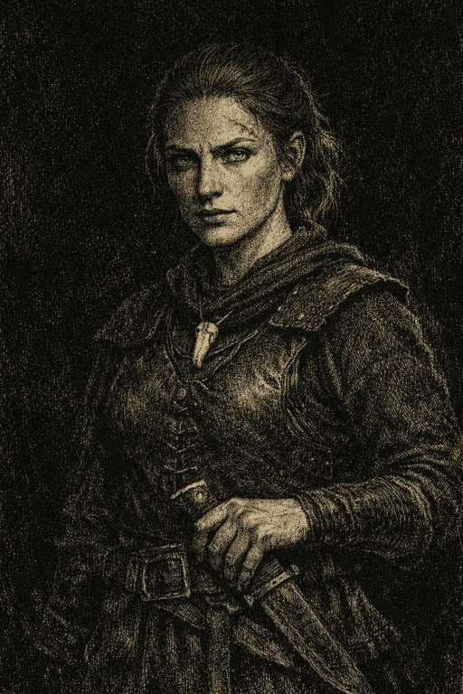
Охотница, которая поняла первой.
«Жила живая — ты целый. Жила мёртвая — ты в навозе.»
Каждая книга серии отмечена одним словом-этапом. «Пустота» — начало.
«Безродный» — первая книга серии «Слово и Кровь». Человек без памяти приходит в себя среди чужой крови на полу мёртвой корчмы. Имени не помнит, вчерашний день — тоже. Но руки знают: как держать нож, как перевязать рану, как разжечь огонь. Мир снаружи выжжен, города стоят на паре и крови, а земля помнит войну. Герой идёт искать себя, потому что тело ведёт — и чем ближе подходит, тем яснее: прошлое стёрли не просто так.
Постапокалиптическая боярка с элементами стимпанка, славянской магии и тёмного фэнтези. Миры на паре и крови, семь кланов, родовые книги, Пепельники и Пустоши — авторская мифология без привычного «магакадемического» сеттинга. Формула магии: Кровь × Земля × Слово × Время = Сила. Магия — это память земли о мёртвых, которую будит живой голос. POV строго от лица героя с амнезией, без магакадемии, гарема и попаданчества.
Серия запланирована на семь книг, каждая отмечена одним словом-этапом: 1. «Безродный» (Пустота), 2. «Наследник Пепла» (Имя), 3. «Голос Предков» (Земля), 4. «Тень Мастера» (Память), 5. «Кованый» (Цель), 6. «Пепельная Корона» (Выбор), 7. «Последнее Слово» (Слово). Главный вопрос серии: «Кем я хочу быть» важнее, чем «кем я был».
Человек без имени и без памяти. Фактическая память стёрта начисто, эмоциональная фрагментарна, а мышечная — сохранена: тело помнит рефлексы, навыки и цену решений. Характер без памяти — наблюдательный, сухой юмор как защита, сострадание вопреки логике, стратегическое мышление. Это не всесильный «нагибатор»: амнезия ограничивает доступ к силе, он побеждает умом чаще, чем кулаком. Рядом с ним двое спутников — добытчик Периферии Данька Щурый и охотница Жгучка.
Три зоны, три степени странности: Центр (города на паре и крови, семь кланов, строгая иерархия), Периферия (серебряные Пепельники, мутанты, охотники за кристаллами) и Пустоши, где реальность не держит форму. Градиент странности совпадает с градиентом опасности и наградой. Магия активируется голосом и требует конкретной цены за каждое применение — без «читерских» решений и роялей. Эмоции показаны через тело и действие, не через названные чувства.
Серия публикуется на Author.Today. Первая книга «Безродный» бесплатная. Новые главы выходят три раза в неделю с клиффхэнгером в конце каждой. Анонсы и обсуждение — в Telegram-канале автора.
Агатис Интегра (agaINTE GRAtis) — русскоязычный автор фантастики и постапокалипсиса. Пишет миры, которые ломаются, и обычных людей, которые держатся. Другие книги: биопанк-постапокалипсис «Ржавь», роман «Четыре болта» по вселенной S.T.A.L.K.E.R., цикл «Сломанная Земля», «Жусан», «НАВМОР». Официальный сайт: againte.gratis.
Книга 1 — бесплатно. Главы выходят три раза в неделю.
Подписка на Telegram — чтобы узнавать о новых главах первым.